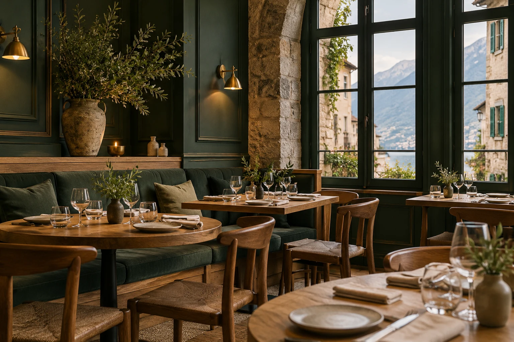

Maison Sauge
Un bistrot de saison à Annecy.
Un dossier complet pour préparer un résultat qui lui ressemble.
Identité, offre, photos et intentions réunies avant l'audit.

Le point de départ
Informations de démonstration
Nom de l’établissement
Maison Sauge
Ville et activité
Annecy · Bistrot de saison
Site existant dans le scénario
https://maison-sauge.example.test
Contact fictif
bonjour@maison-sauge.example.test
Adresse illustrative
18, passage des Tilleuls · adresse fictive
Horaires fournis
Du mardi au samedi · 12 h–14 h et 19 h–22 h
L’histoire de la maison
Une petite maison, une grande table. Camille et Noé ont imaginé un bistrot où la saison décide du menu : des producteurs proches, des assiettes généreuses et le plaisir de prendre son temps. La salle mêle bois clair, pierre et nuances de sauge.
Une offre déjà renseignée
| Plat fourni | Prix |
|---|---|
| Poireaux rôtisVinaigrette de noisette, œuf mollet et herbes fraîches | 12 € |
| Gnocchis à la saugeChampignons de saison, beurre noisette et vieux comté | 24 € |
| Truite des AlpesLégumes du marché, citron confit et jus d'herbes | 28 € |
| Poire pochéeCrème légère à la vanille et crumble de sarrasin | 10 € |
Les images du scénario

Ce que l’audit doit résoudre
Rendre la maison plus facile à trouver, son offre plus claire et la préparation d'un site plus concrète.